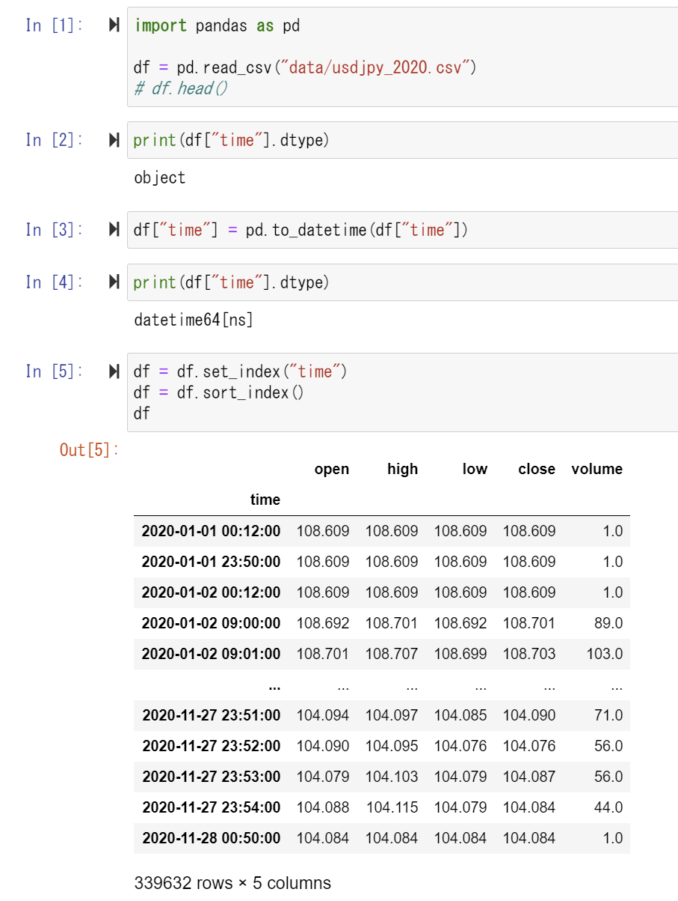

鉄は熱いうちに打て
=============================
FXのデータをテクニカル分析してみる（日付に変換）¶
2020-12-04
この記事は PyLadies Japan Advent Calendar 2020 の5日目の投稿です。
この記事は、 FXのデータをテクニカル分析してみる（準備編） の続きです。
テクニカル分析はとりあえず日付データを日付順に並べないと話がはじまりません。
そこで今回はデータを日付型にして、インデックスに設定します。
dtype でカラムの現在の型がわかります。
print(df["time"].dtype)
日付型に変換するには pandas.to_datetime を使うと文字列を判断して変換してくれます。 変換前と変換後のdtypeを見てましょう。
次にindexにするには set_index() を使います。 ついでにインデックスを昇順に並べ替えるには sort_index() を使います。 今回は使ったデータがすでに並んでいましたが、書いておきます。
この記事は PyLadies Japan Advent Calendar 2020 の5日目の投稿です。